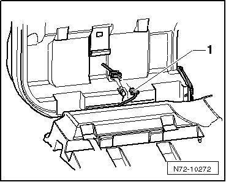
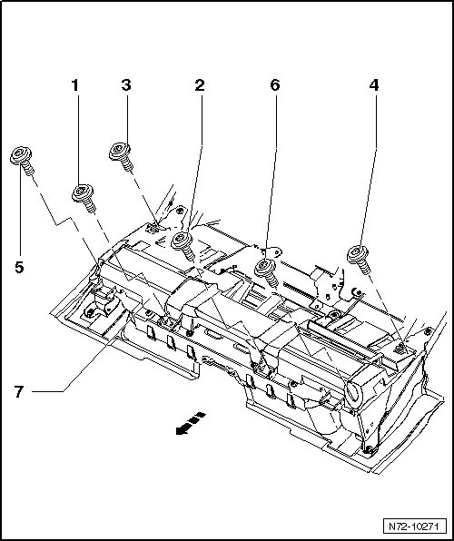

Bench Seat, From December 2006
Rear Seats
Bench Seat, from December 2006
Removing
- Fold down rear backrests.
Vehicles with seat heating system

- Switch off ignition.
- Disconnect seat heating wiring harness - 1 - from left bench seat.
- Disconnect seat heating wiring harness from right bench seat as described.
All vehicles
- Remove bolts - 1 - through - 6 -.
• For the sake of illustration, rear bench seat is not depicted in the illustration.
• The - arrow - symbolizes the vehicle's direction of travel.
- Remove rear bench seat with support piece - 7 - from vehicle.

Installing
• The bolts are microencapsulated and must therefore be replaced after every removal.
• Before installing the new bolts, the threads of the corresponding nuts must be cleaned.
- Raise rear bench seat with support piece - 7 - into vehicle.
- Bolt the rear bench seat to the vehicle.
The bolt installation sequence is: - 1 -, - 2 -, - 3 -, - 4 -, - 5 - and - 6 - (55 Nm).
- On vehicles equipped with seat heating, connect the seat heating wiring harness - 1 - on both bench seats.